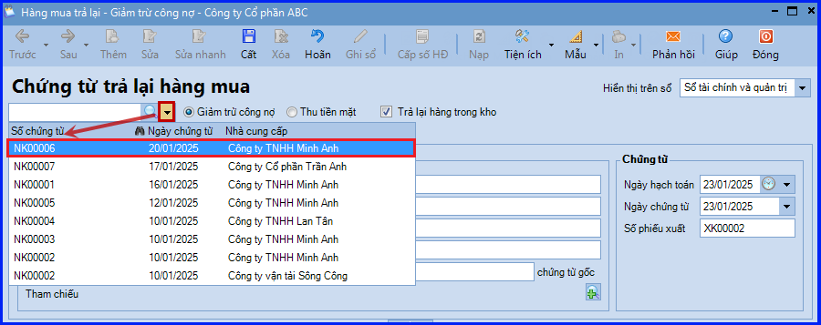
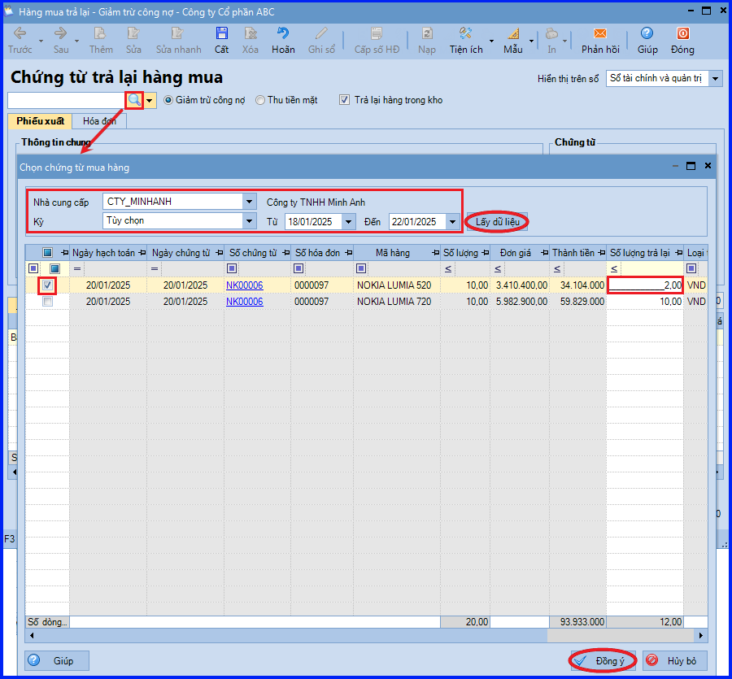
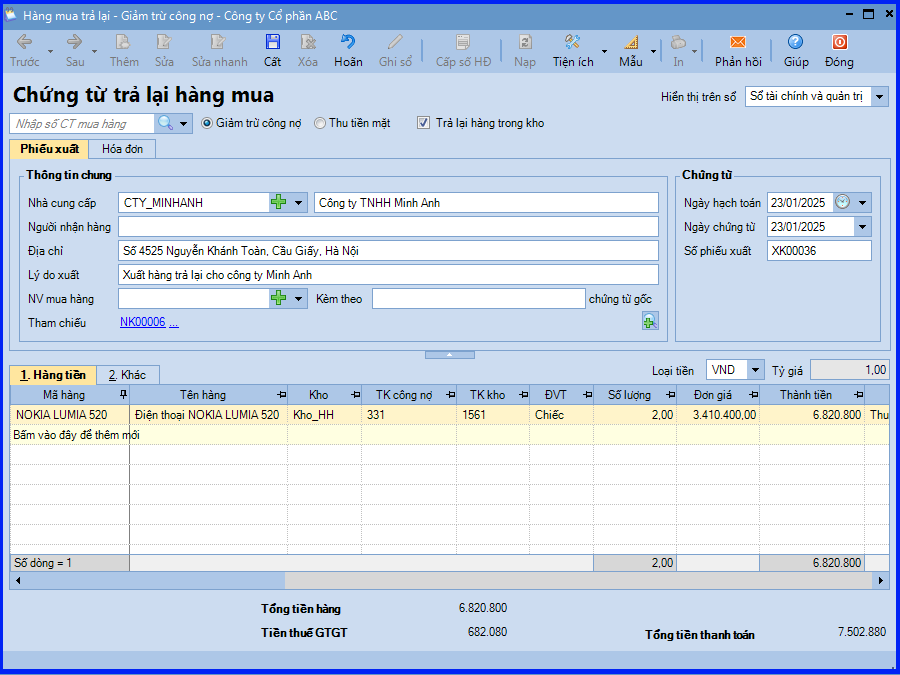
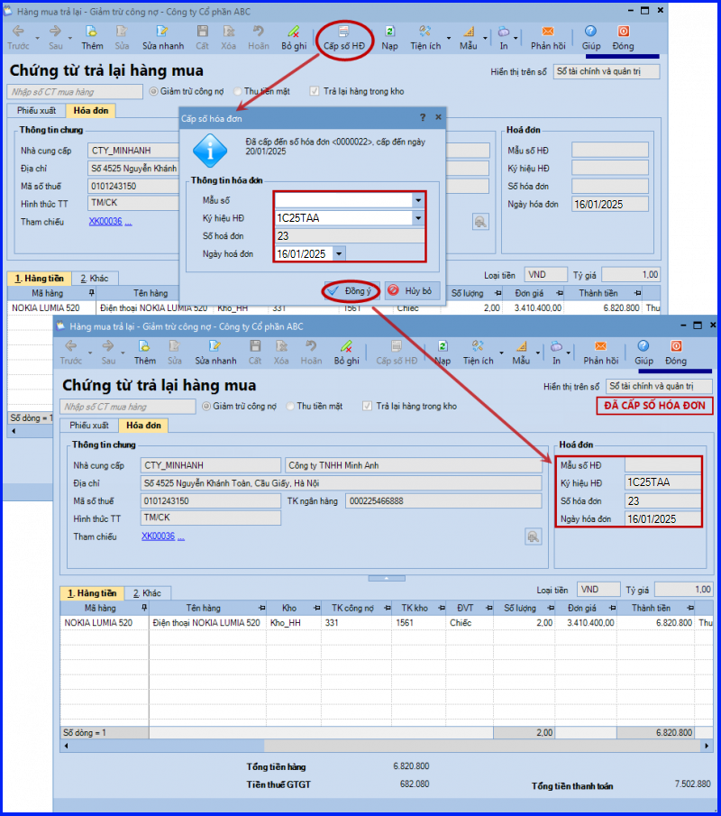
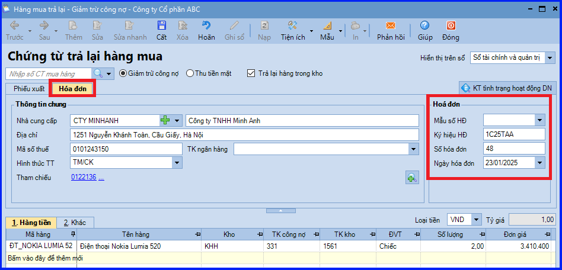

Hướng dẫn cách hạch toán ghi sổ nghiệp vụ xuất trả lại hàng đã mua về nhập kho trên phần mềm Misa
Khi hàng mua về nhập kho, phát hiện không đúng quy cách, phẩm chất như đã thỏa thuận ban đầu, thông thường sẽ có các hoạt động sau:
- Công ty và nhà cung cấp sẽ thỏa thuận với nhau và lập biên bản về việc trả lại hàng.
- Nhân viên mua hàng đề nghị xuất kho để trả lại hàng.
- Kế toán kho lập Phiếu xuất kho, sau đó chuyển Kế toán trưởng và Giám đốc ký duyệt.
- Kế toán bán hàng lập hoá đơn GTGT cho hàng mua bị trả lại.
- Thủ kho xuất kho hàng hóa và ghi Thẻ kho.
- Nhân viên mua hàng yêu cầu kế toán bán hàng xuất hóa đơn cho số lượng hàng mua bị trả lại
- Nhân viên mua hàng giao lại hàng cùng hóa hàng trả lại cho nhà cung cấp.
- Kế toán hạch toán ghi giảm công nợ và hàng tồn kho
1. Cách định khoản hạch toán khi xuất trả lại hàng đã mua về nhập kho
Nợ TK 111, 112, 331… - Số tiền hàng mua bị trả lại
Có TK 156
Có TK 133 - Thuế GTGT được khấu trừ (nếu có)
2. Các bước hạch toán, ghi sổ nghiệp vụ xuất trả lại hàng đã mua về nhập kho trên phần mềm Misa
- Vào phân hệ "Mua hàng" => chọn "Trả lại hàng mua" (hoặc vào tab "Trả lại hàng mua" => ấn "Thêm").

- Chọn phương thức thanh toán và tích chọn "Trả lại hàng trong kho".
- Chọn chứng từ mua hàng có hàng mua cần trả lại theo một trong hai cách sau:
+ Cách 1: ấn vào biểu tượng mũi tên để chọn chứng từ mua hàng từ trong danh sách.

+ Cách 2: ấn vào biểu tượng kính lúp để tìm kiếm và chọn chứng từ mua hàng:
Thiết lập điều kiện tìm kiếm chứng từ mua hàng, sau đó ấn Lấy dữ liệu.
Tích chọn mặt hàng muốn trả lại và nhập số lượng hàng trả lại.
Và ấn "Đồng ý".

- Khai báo thêm các thông tin trên chứng từ trả lại hàng mua như: lý do xuất, nhân viên mua hàng,…

- Và ấn "Cất".
- Nếu có sử dụng phần mềm để quản lý việc xuất hóa đơn, thực hiện xuất hóa đơn cho chứng từ trả lại hàng mua như sau:
+ Trường hợp 1: Không sử dụng dịch vụ hóa đơn điện tử.

+ Trường hợp 2: Có sử dụng dịch vụ hóa đơn điện tử: Thực hiện phát hành hóa đơn điện tử.
- Nếu không sử dụng phần mềm để quản lý việc xuất hóa đơn: Nhập trực tiếp thông tin hóa đơn GTGT tại tab "Hóa đơn".

Lưu ý:
- Trường hợp Thủ kho có tham gia sử dụng phần mềm, sau khi chứng từ trả lại hàng mua được lập, chương trình sẽ tự động sinh phiếu xuất kho trên tab "Đề nghị nhập, xuất kho của Thủ kho". Thủ kho hiện việc ghi sổ phiếu xuất kho vào sổ kho.
- Trường hợp chọn phương thức giảm trừ là "Thu tiền mặt" và Thủ quỹ có sử dụng phần mềm, sau khi chứng từ được lập, Thủ quỹ sẽ đăng nhập vào phần mềm để thực hiện Ghi sổ cho các phiếu thu.
=============================
Nếu bạn muốn thành thạo các kỹ năng làm kế toán trên phần mềm Misa
Thì bạn có thể tham khảo "Khóa Học Thực Hành Kế Toán Trên Phần Mềm Misa" tại Công ty đào tạo Kế Toán Diệu Tâm
Trong khóa học này, bạn sẽ được dạy cách lên sổ sách, lập báo cáo tài chính trên phần mềm Misa
Chi tiết về chương trình đào tạo bạn xem tại đây nhé: Khóa học thực hành kế toán trên Misa
=============================
Nếu bạn muốn thành thạo các kỹ năng làm kế toán trên phần mềm Misa
Thì bạn có thể tham khảo "Khóa Học Thực Hành Kế Toán Trên Phần Mềm Misa" tại Công ty đào tạo Kế Toán Diệu Tâm
Trong khóa học này, bạn sẽ được dạy cách lên sổ sách, lập báo cáo tài chính trên phần mềm Misa
Chi tiết về chương trình đào tạo bạn xem tại đây nhé: Khóa học thực hành kế toán trên Misa
=============================